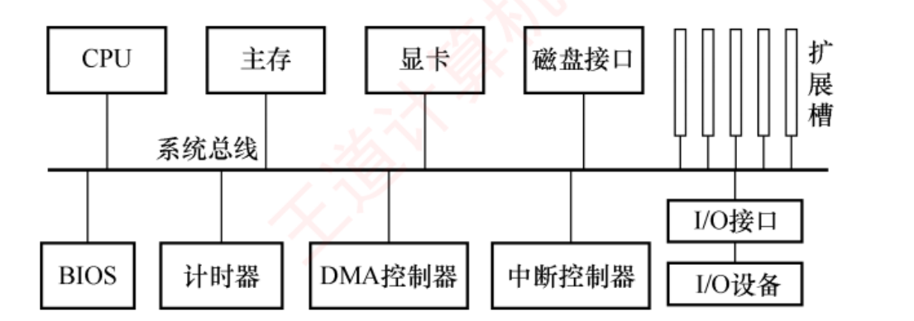
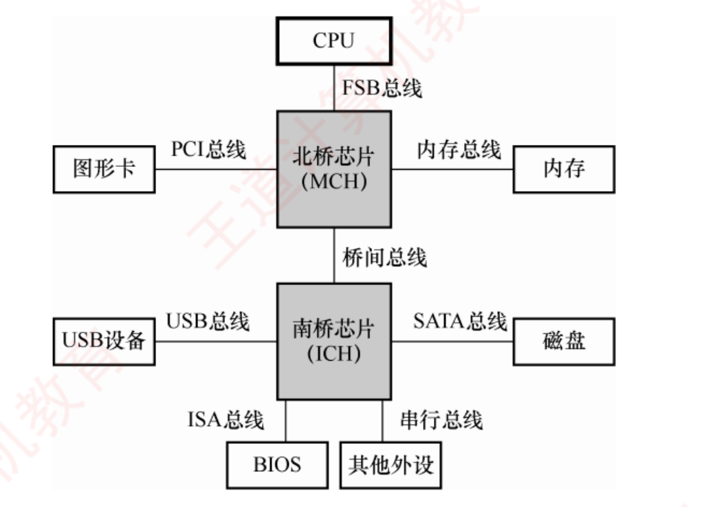
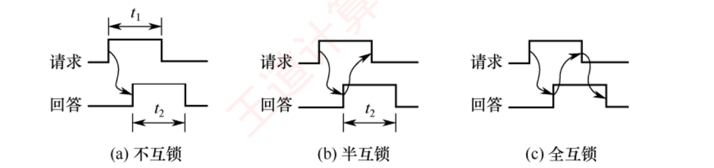

← 返回 408 复盘中心
怎么读这一页： 正文是书上的内容，我只做了结构重排和取舍 。色块分两个维度——① 按来源：
必记结论 （书上的考点句）、
我的补讲 、
陷阱 。② 按动作：
背景 · 考试不碰 ——虚线灰块，明确告诉你哪几段可以快速划过 ；
知识串联 ——绿块，就地标出这里和前面哪一章、和《操作系统》《计算机网络》哪个概念是同一件事 。📄 p.N 点开跳到原书对应页；紫色 考点追踪 是王道标注的真题年份。⚠️ 本章的读法：17 页，但真题密度是全书最高的一章 （6.2 是 1.14 真题/页、6.1 是 1.11 真题/页，
都超过 ch4 最高的 4.2 的 0.93 和 ch5 最高的 5.6 的 0.90）。18 道真题全部是选择题 ，一道综合真题都没有 ——
所以本章不需要练大题格式，但每一个概念都可能被单独拎出来当选项 ，读的时候要细到词。本章真正会丢分的只有两处，我在正文里用红块标了 6 次 ：
「总线带宽」和「有效数据传输率」是两个不同的量 ；题干给的是「时钟频率」还是「工作频率」 。
这两条搞不清，2009/2014/2019/2020/2023/2024/2025 七年的真题会成片丢。 本页凡写"复算""实测"的数字，都是我做那 70 道题时用 Python 真算过的 ，不是抄书。
📄 p.274
本章定位
考纲内容 ：（一）总线的基本概念 。（二）总线的组成及性能指标 。（三）总线事务和定时 。
王道的复习提示 ：本章的知识点较少，通常以选择题的形式出现 ，特别是总线的特点、猝发传输方式、性能指标、定时方式及常见的总线标准 等。总线带宽的计算 也可能结合其他章节出综合题。
我的补讲 · 这一章值不值得花时间
书上说「知识点较少」，很容易被理解成「不重要」——恰恰相反，它是全书单位页数回报最高 的一章。
章 页数 真题数 真题/页 第 6 章 总线 17 18 1.06 ⭐ 全书第一 第 5 章 中央处理器 79 43 0.54 第 3 章 存储系统 71 45 0.63 第 4 章 指令系统 47 27 0.57
潜台词是：命题人几乎每年都要在总线上出一道选择题（2 分），而这一章只有 17 页。
⟹ 所以能考的、拿分性价比最高的是：把这 17 页读到每个概念都能一句话讲清 ，
而不是像 ch5 那样去练大题格式。本章一道综合真题都没有。 我的补讲 · 本章的地图（先看这个再往下读）
书上把内容分成 6.1、6.2 两节，但真正的知识结构是三个互相正交的维度 + 一个公式 。
读的时候把每句话往这四个格子里放，就不会觉得零碎：
【一个公式】总线带宽 = 总线宽度 × 总线工作频率 ← 6.1.3
全章 8 道计算真题，全部只用这一个式子
【维度一】事务方式：非突发 ←→ 突发 ← 6.2.1
判据：一次地址配【一次】还是【多次】数据
【维度二】物理传输：串行 ←→ 并行 ← 6.2.1
判据：比特位排队走还是同时走
（串行再分：同步串行 / 异步串行）
【维度三】定时方式：同步 / 异步 / 半同步 / 分离式 ← 6.2.2
判据：靠统一时钟 / 靠握手 / 时钟+Wait / 拆两段
三个维度是正交 的：一条总线可以同时是「同步 + 并行 + 支持突发」（2014 真题那条），
也可以是「同步 + 串行 + 全双工」（QPI，2020 真题）。
⟹ 见到题目描述一条总线，先在三个维度上各给它定一个位，题面就清楚了。 王道在章首提了两个问题 （答案在 6.3 小结）：1）引入总线结构有什么好处？2）引入总线结构会导致什么问题？如何解决？ ——这两问建议现在先自己答一遍，读完再对。
6.1 总线概述
📄 p.274
6.1.0 总线是用来取代什么的
早期计算机中，各部件通过专用连线直接互连 ，称为分散连接 。随着 I/O 设备种类和数量不断增加，这种连接方式在扩展性和灵活性 方面面临挑战。为提升系统的可扩展性与连接灵活性，计算机体系结构逐步演进为采用总线连接方式 ，并进一步催生了各类标准化总线规范。
必记结论 · 总线的定义与两个核心特征
总线是一组可供多个部件分时共享 的公共信息传输线路 。 其核心特征是：· 分时性 ：任一时刻仅允许一个部件向总线发送 信息 ，多个发送方需要分时使用总线。· 共享性 ：多个部件可同时挂接在总线上，并能同时接收 总线上传输的信息。
我的补讲 · 「分时」管发、「共享」管收，别记串
书上这两句话读起来很像，实际上一句管「发」、一句管「收」，而且方向相反。
潜台词是命题人只要把「发」和「收」对调，就是一道题。
特征 管哪一侧 能不能同时 分时性 发送 不能 ，任一时刻只有一个共享性 接收 能 ，可以有多个
物理直觉：总线是一根公共电线。两个人同时往同一根线上加不同电平，线上的电平就没有确定值了——这叫冲突，必须禁止；
多个人同时「读」这根线上的电平，谁也不改变它，互不影响——所以允许。
⟹ 所以能考：「挂接在总线上的多个部件（ ）」，正解是「只能分时向总线发送数据，但可同时从总线接收数据 」。
四个选项就是「发/收 × 分时/同时」的 2×2 全组合。 （练习 6.1-01）
知识串联
分时共享
「一份资源被多个使用者分时占用」是 408 四科最高频的一个模式，本章只是它在导线 上的实例：
· 本章 ：多个部件分时使用
一组总线 ⟹ 需要
总线仲裁 （6.3 小结）；
· ch5 数据通路 ：单总线结构里，
任一拍只允许一个部件把数据送上 CPU 内部总线 ——
写微操作序列时
同一拍出现两个 Xout 一定错 ，那条铁律就是本章「分时性」在 CPU 内部的翻版；
· 《操作系统》 ：多个进程分时使用
一个 CPU ⟹ 需要
进程调度 ；
· 《计算机网络》 ：多个站点分时使用
一条信道 ⟹ 需要
介质访问控制（CSMA/CD） 。
⟹ 四处的解法是同构的：都要有一个「谁现在能用」的裁决机制。记住这条主线，本章的仲裁、OS 的调度、网络的 MAC 协议就是同一个问题的三个答案。 📄 p.274
6.1.1 总线的分类
考点追踪 总线相关的概念与特点（2016、2017 ） · 数据总线上传输的内容（2011 ）
按连接对象 分，总线有四类：
内部总线 。指芯片内部的总线，也称片内总线 ，用于 CPU 芯片内部各寄存器之间以及寄存器与 ALU 之间 的连接。系统总线 。指计算机系统内各功能部件（CPU、主存、I/O 接口 ）之间相互连接的总线。根据所传输信息的内容不同，系统总线可分为数据总线、地址总线、控制总线三类 （见下表）。I/O 总线 。用于连接主机与其内部的各类 I/O 控制器 （如显卡、网卡等），通常采用标准化内部总线协议，如 PCI、AGP、PCI Express 。通信总线 。用于主机与外部 I/O 设备之间 或不同计算机系统之间 的通信。这类总线需要适应不同的传输距离、速率和电气规范，典型代表包括 RS-232、USB 。
我的补讲 · 四级分类的尺度是「跨过了哪一层边界」
书上这四条并列着写，看不出层次；其实它们是按边界从小到大 排的一条线。
潜台词是：判断一条总线属于哪一类，只要问「它的两端各在什么地方」。
内部总线 ── 边界：CPU 芯片内部 寄存器 ↔ ALU
系统总线 ── 边界：主机箱内功能部件 CPU ↔ 主存 ↔ I/O 接口
I/O 总线 ── 边界：主机与内部控制器 显卡、网卡（PCI/AGP/PCIe）
通信总线 ── 边界：主机与机外设备 RS-232、USB；或机器之间
⟹ 所以能考：「系统总线用来连接（ ）」，四个选项分别是「寄存器和运算器」（内部总线）、
「运算器和控制器」（仍在 CPU 内部）、「CPU、主存和外设部件 」（✔）、「接口和外部设备」（通信总线）。 （练习 6.1-03）
陷阱 · 「内部总线」不是「机箱内部的总线」
「内部总线」最容易望文生义 ——它不是 「机箱内部的总线」，而是芯片内部 的总线片内总线 。而「I/O 总线」连的才是「主机内部 的各类 I/O 控制器」。
两个「内部」指的层级差了一大截：一个在芯片里，一个在机箱里。
必记结论 · 系统总线的三类信息（本节骨架，后面 6 道题全靠它）
线 传什么 方向 位数决定什么 数据总线 指令、操作数、状态字、中断类型号 双向 CPU 一次能并行传送的数据位数 地址总线 要访问的主存单元 或 I/O 端口 的地址 单向 （CPU→外）系统最大可寻址空间 控制总线 时钟、复位、总线请求/允许、中断请求/响应、存储器读/写、I/O 读/写、传输确认 由若干单向或双向 信号线组成 ——
为减少芯片引脚数量并降低成本，部分硬件架构采用地址线与数据线复用 设计，此时地址与数据信息分时在同一组物理线路上传输。 我的补讲 · 数据线上流的不是「数据」，是「一切被读写的内容」
书上把数据总线的内容列成「指令、操作数、状态字、中断类型号」四项，看着像是随手举例，其实是一份穷举清单 ，每一项都被真题考过。
潜台词是：数据线的名字骗人——它传的不是狭义的「数据」，而是一切从主存/外设被读出或写入的内容 。
判据（一句话）：
「被读写的【内容】」 ──→ 数据总线
指令（取指时）· 操作数 · 状态字 · 中断类型号
· 间址寻址第一次访存取回的【有效地址】
「协调时序的【信号】」 ──→ 控制总线
请求 · 回答（握手）· 读/写命令 · Wait · 复位 · 时钟
⟹ 所以能考（2011 真题）：「在系统总线的数据线上，不可能 传输的是」——
A 指令 ✔走数据线、B 操作数 ✔、C 握手（应答）信号 ✘ 、D 中断类型号 ✔。答案 C。
D 是真正的杀招：「中断」两个字太像控制了，但中断类型号是外设送给 CPU 的一个编号（内容） ，
CPU 拿它去中断向量表查入口地址。 （练习 6.1-11）
陷阱 · 中断相关的三样东西各走各的线
中断请求 INTR ── 控制线（外设 → CPU：我要中断）
中断响应 INTA ── 控制线（CPU → 外设：准了）
中断类型号 ── 数据线（外设 → CPU：我是几号） ★
CPU 拿它去中断向量表查入口地址
三个里只有中断类型号走数据线。把它们混成一类，2011 真题必错。 知识串联
中断
「中断类型号走数据总线」这一条是 408 里少见的三章共用 的结论，三处会各考一次：
· 本章 ：2011 真题问「数据线上不可能传什么」；
· ch5 异常和中断机制 ：讲中断响应周期时，
「关中断 → 保存断点/PSW → 引出中断服务程序」三步全由硬件完成 ，其中「引出」就要靠中断类型号查向量表；
· ch7 I/O 方式 ：程序中断方式里，
接口在中断响应周期把中断类型号送上数据总线 ，是同一个动作的正面描述；
· 《操作系统》 ：中断处理程序的入口地址表（中断向量表）由 OS 初始化，
组原负责「怎么找到它」，OS 负责「里面填什么」 。
⟹ 四处讲的是同一次硬件动作的不同侧面。 必记结论 · 四类信息的传输方向（只有数据是双向的）
信息 单/双向 方向 数据 双向 CPU ⇄ 内存/外设 地址 单向 CPU → 内存/外设 控制 单向 CPU → 内存/外设 状态 单向 内存/外设 → CPU （与控制相反 ）
陷阱 · 「控制线是单向还是双向」，两处说法看似打架
上面的三类信息表里写「控制总线由若干单向或双向 信号线组成」，方向表里又写「控制信息是单向 的」。
不矛盾——说的是两个层次：
【一根一根的线】控制总线是一束线，其中有单向线也有
双向线，具体构成取决于系统设计需求
【一类一类的信息】每一类「控制信息」有确定的流向：
控制 CPU→设备；状态 设备→CPU
⟹ 题干问「信息」就按方向表答；问「线的构成」就答「单向或双向都有」。
真正严格单向的只有地址总线 。 （练习 6.1-08、6.1-10）
我的补讲 · 「状态总线」这个名字只在解析里出现
书上正文只讲了数据/地址/控制三类，但 6.1.5 单选 15 的解析里冒出一句「状态信息则通过状态总线 由内存或外设发送至 CPU」。
潜台词不是系统总线变成了四类 ——物理上状态信号就走在控制总线里 ，
把「状态总线」理解成「控制总线中方向朝 CPU 的那一部分线」 即可。⟹ 所以能考：「控制信息是双向的」判错 （它是单向的，只是与状态方向相反）。
做题时只认「控制 = 去、状态 = 回」这一对关系，别纠结它算第三类还是第四类。
知识串联
地址线 ↔ MAR
本章「地址线的位数决定最大可寻址空间」，与 ch3 主存储器 的
「MAR 的位数决定可寻址单元数、MDR 的位数决定存储字长 」是同一件事的两端 ：
MAR 的位数通常就等于地址总线的根数，MDR 的位数通常就等于数据总线的根数（总线宽度）。
再往前接 ch5 的「位数取决于谁」四连 ：
IR = 指令字长 · 通用寄存器 = ALU = 机器字长 · MDR = 存储字长 · MAR/PC = 地址总线宽度 ——
那张表里最后一行的「地址总线宽度」，讲的就是本章的地址线。
⟹ ch3 说芯片、ch5 说寄存器、ch6 说导线，三章说的是同一组物理连线。 📄 p.275
*6.1.2 常见的总线标准
背景 · 考试不碰（已于 2021 年移出大纲）
书上给这一节的标题打了星号，脚注写明：「本节内容已于 2021 年 从统考大纲中删除，仅供学习参考。」 相关的三道真题（2010 缩写、2012 USB 特性、2013 设备总线）都在 2021 之前 ，
⟹ 12 个标准的英文全称、诞生年代、速率数字不必背 ，快速划过即可。 总线宽度、带宽、时钟频率、寻址能力、是否支持突发传送 等。
必记结论 · 这一节唯一还在考纲内的东西：串行 vs 并行的归类
归类 并行 串行 系统总线 ISA、EISA —— 局部总线 VESA、PCI、AGP PCI-E 设备总线 PCMCIA、IDE(ATA)、SCSI RS-232C、USB、SATA
⭐ 串行的只有 4 个：PCI-E、RS-232C、USB、SATA。记这 4 个，其余 8 个全是并行。 我的补讲 · 为什么只有「串/并」这一条留在了考纲里
书上把这一节整体划出了大纲，却在 6.2 里保留了 2016、2017 两道真题，考的都是「某某总线是串行还是并行」。
潜台词是：大纲删掉的是「记住 ISA 是哪一年的、速率多少」这类史料 ，
留下的是「串行为什么反而更快」这个原理 。
有一条历史线索比死记 12 个名字好用得多：
被取代（并行） 取代者（串行）
IDE / ATA ──→ SATA
PCI / AGP ──→ PCI-E
并口打印线 ──→ USB
FSB（并行前端） ──→ QPI（点对点串行）
★「后浪串行、前浪并行」——四对替代关系全都
印证了 6.2 那句「现代高速接口多采用串行化设计」
⟹ 所以能考（2017 真题）：「PCI-Express×16 采用并行传输方式」判错 。
×16 指 16 条通道（lane），每条通道内部仍是串行差分对 ，不能因为有 16 条就叫并行传输。
这是本章最阴的一处。 （练习 6.1-31、6.2-11）
背景 · 顺带一提的两个定义（能读懂就行）
局部总线 （书上藏在 VESA 条目里）：位于 CPU 与 ISA 总线之间 的高速扩展总线，
旨在将高速外部设备（如显卡、磁盘控制器）从低速 ISA 总线迁移至更接近 CPU 的数据通路 ，以提升 I/O 性能。USB 的五个特点 （2012 真题）：① 即插即用 ② 热插拔 ③ 采用菊花链 形式级联
④ 一个 USB 控制器可扩充高达 127 个 外部 USB 设备 ⑤ 速率可达 480Mb/s （USB 2.0）。
⚠️ USB 的 S 就是 Serial，「同时传输 2 位数据」一律判错。
知识串联
接口标准 ↔ I/O 接口
本节这 12 个总线标准，在 ch7 输入输出系统 里会以另一个身份重新出现：I/O 接口（设备控制器） 。
本章的说法 ch7 的说法 CPU ↔ 控制器 局部总线 （PCI / AGP / PCIe）CPU 通过端口 访问 I/O 接口 控制器 ↔ 设备 设备总线 （USB / SATA / SCSI）I/O 接口与设备之间 的连接
2013 真题问「用于设备和设备控制器之间 互连的接口标准」，答案 USB——
它考的其实就是 ch7 那条「CPU — 接口 — 设备」链路的下半段 。
⟹ 读 ch7 的 I/O 接口时回头看这张表，两章会立刻对上。 📄 p.276
6.1.3 总线的性能指标 ⭐ 全章第一考点
考点追踪 总线带宽的分析与计算（2009、2013、2014、2018—2020、2024、2025 ）
必记结论 · 七项性能指标（★ 三项是「最主要」的）
总线传输周期（总线周期） ：完成一次完整总线事务 （如一次读或写）的总时间，通常由若干总线时钟周期组成 。总线时钟频率 ：总线基础时钟信号的频率，是总线时钟周期的倒数 。早期与 CPU 时钟同频，现代总线的时钟通常独立于 CPU 时钟 。★ 总线工作频率 ：总线每秒能进行的有效数据传输次数 。早期每个时钟周期仅传输一次，此时工作频率 = 时钟频率 ；现代总线一个时钟周期内可传送 2 次、4 次甚至更多次，工作频率可达时钟频率的 2 倍、4 倍等。 ★ 总线宽度 ：总线中数据线的条数 ，决定每次能并行传输的数据位数。★ 总线带宽 ：总线在单位时间内所能传输的最大数据量 。总线复用 ：同一组信号线在不同时间段 传输不同类型 的信息（如地址/数据线复用）。可减少引脚数量，节省硬件成本。 总线寻址能力 ：由地址线的位数 决定。例如 16 位地址线可寻址 2¹⁶ = 65536 个存储单元，若每单元 1B，则最大寻址空间为 64KB 。
总线最主要的性能指标为：总线宽度、总线工作频率和总线带宽。 总线带宽 ＝ 总线宽度 × 总线工作 频率
总线带宽 单位时间最大数据量
总线宽度 数据线条数 ÷ 8
总线工作频率 每秒传送次数
书上的例子 ：若某总线的时钟频率 为 11MHz，每个时钟周期可传送 2 次 数据（工作频率 = 11×2 = 22MHz），总线宽度为 16 位（2 字节），则总线带宽 = 2 × 22 × 10⁶ = 44MB/s 。
必记结论 · 书上的【注意】框（本章最值钱的一段话）
计算带宽（最大数据传输率）时，应依据总线的物理参数 （宽度、时钟频率、每周期传输的次数），
反映其理论峰值 传输能力，无须考虑 具体总线事务中的地址/命令开销或突发传输细节 。
仅在求平均数据传输率 时，才需要分析事务时序。
切勿将「两个设备间一次通信的有效速率 」误当作「总线带宽 」。
陷阱 ⭐⭐ · 全章最大的失分源：带宽 vs 有效速率
这是本章唯一真正会丢分的地方，我把两个量的差别摊开写一次，后面所有计算题都回来查这张表：
总线带宽（＝最大数据传输率） 有效/平均数据传输率 怎么算 宽度 × 工作频率 本次事务数据量 ÷ 本次事务总 时间 看不看事务时序 完全不看 每一拍都要数 地址拍算不算 不算 算进分母 从设备准备时间算不算 不算 算进分母 题干怎么问 「总线带宽」「最大数据传输率」「理论最大传输速率」
「数据传输速率为多少」（给了完整时序）、「读取一个主存块所需时间 」 典型真题 2009 · 2014 · 2019 · 2020 · 2024 · 2025 2012 · 2023
⟹ 做每一道计算题的第一个动作：在题干上圈出「带宽」还是「时间/有效速率」。圈错了，后面全白算。 我的补讲 · 2024 真题：整整两行题干全是干扰
书上那段【注意】框看起来像是编者的碎碎念，其实它是为 2024 真题量身写的 。那道题的题干是这样的：
「某存储器总线的时钟频率为 420MHz，总线宽度为 64 位，
每个时钟周期传送 2 次数据； ← 有用
其总线事务支持突发传送方式，最多传送 8 次数据，
第 1 个时钟周期传送地址和读/写命令，从第 4 个至
第 7 个时钟周期连续传送 8 次数据。 ← ★全是干扰★
该总线的总线带宽（最大数据传输率）为（ ）。」
正解只用第一句：(64/8)B × 420MHz × 2 = 6.72GB/s （选 B）。
潜台词是：命题人故意把「一次事务的详细时序」摆出来，看你会不会去算它。
我用 Python 复算过「老实按时序算」的结果：8 次 × 8B = 64B，事务共 7 拍，
64B ÷ (7/420MHz) ≈ 3.84GB/s —— 正是选项 A。
⟹ 所以能考：A 就是给「老老实实按时序算」的人准备的坑 。
这道题不考计算，考的是「你知不知道带宽的定义里不含 什么」。 （练习 6.1-25）
我的补讲 · 2023 真题：与 2024 恰好是一对镜像
把 2023 和 2024 并排放，本章的分界线就立起来了：
2023 2024 问什么 读取一个主存块所需的时间 总线带宽 事务时序 每一拍都要算 整段是干扰，全扔 准备数据 6ns 必须加 该题没给，也不需要 答案 4×(1+6+1) = 32ns 8B×420M×2 = 6.72GB/s
⟹ 两题必须成对做。只做其中一道，会把那道题的做法误当成通法。 陷阱 ⭐⭐ · 第二条分界线：给的是「时钟频率」还是「工作频率」
带宽公式里的频率是工作 频率，但题干给的经常是时钟 频率——中间差一个倍数，这就是第二大失分源。
题干出现 是哪种频率 怎么处理 真题 「时钟 频率」＋「每个时钟周期传送 N 次」「上升沿下降沿各一次」
时钟频率 × N 2014 （×2）· 2024 （×2）「工作 频率」「每秒传送 xxxM 次」「MT/s 」
工作频率 不乘不除 2019 · 2025 「总线周期为 N 个时钟周期」「传送一个字需要 N 个时钟周期」
时钟频率 ÷ N 2009 （÷2）
⟹ 固定成两步：① 圈出「频率」二字前面是「时钟」还是「工作」；② 只有「时钟」才去找每周期传几次。
这两步能一次性拿下 2009/2014/2019/2020/2024/2025 六道真题。 我的补讲 · 2025 真题：2024 的反向陷阱
2024 让你「记得乘」，2025 让你「忍住别乘」——两题是一正一反的一对，也是本章最精巧的设计。
2025 题干：「每个总线时钟周期传送 4 次数据
（quad pumped 技术）。若总线的【工作频率】
为 1333MHz（实际单位是 MT/s，表示每秒
传送 1333M 次），总线宽度为 64 位……」
★ 题干已经把话说死了：1333M 是【每秒传送次数】
★ 那句 quad pumped 只是在解释 1333MT/s 是怎么来的
（时钟 333MHz × 4），不是让你再乘一次
带宽 = 1333M 次/s × 8B/次 = 10664MB/s ≈ 10.66GB/s（选 A）
误乘 4 ⟹ 42.66GB/s ⟹ 正是选项 B
潜台词是：MT/s（Mega Transfers per second）天生就是「工作频率」的单位 ，
而 MHz 是时钟频率的单位。凡见 MT/s，或题干写「表示每秒传送 xxx 次」，一律直接当工作频率用。
⟹ 所以能考：内存条型号后缀的数字（DDR3-1333 、DDR4-3200 ）历来指的是每秒传送次数 ，不是时钟频率。
2019 真题的 DDR3-1333 和 2025 真题的 1333MT/s 算的是同一个数 ：8B × 1333M = 10.66GB/s。
区别只在 2019 还要再乘 3 个通道得 32GB/s，2025 不乘。 （练习 6.1-23、6.1-26）
我的补讲 · 倍数只能来自题干明写的那一个
本章的「乘 2」有三个不同来源，它们不叠加 ，题干写了哪个就只乘哪个：
倍数 叫法 物理含义 出现在 ×2 双沿 / DDR / double pumped 上升沿和下降沿各传一次 2014、2024 ×4 quad pumped 一拍传 4 次 2025（但那题给的已是工作频率 ） ×2 （另一种）全双工 两个方向同时 传 2020 QPI ×3 多通道 3 条物理总线并联 2019 三通道
⟹ 2014 真题的选项 D（1056MB/s）就是「既算双沿又算全双工」多乘一次 2 的结果。
自己加戏是本类题最常见的死法 。 陷阱 · 复用「只省线不提速」，八个字背死
地址/数据线复用在本章出现三次，三次的处理口径完全不同 ：
真题 问什么 复用怎么处理 2014 最大数据传输速率（带宽 ） 干扰，不扣 ——带宽只看物理参数2012 一次事务的实际耗时 关键 ——地址必须单占一拍2018 能否提高数据传输率 判错 ——只省线不提速
为什么复用不提速：地址和数据要分时 占用同一组线，一次事务反而要多花传地址的时间。
它换来的是引脚少、封装小、成本低。 知识串联
复用 · 省引脚
「用分时换引脚」这一手，ch3 主存储器 里已经用过一次：
DRAM 采用行列地址复用 （RAS/CAS），把 n 位地址拆成行、列两批，分两次送进同一组 地址引脚，引脚数直接减半。
⟹ ch3 复用的是地址的两半 ，ch6 复用的是地址与数据 ，手法完全一致：牺牲时间，换空间（引脚/成本） 。
而它的代价在两章里也一致——DRAM 因此有了 RAS-to-CAS 延迟，总线因此多花一拍传地址。 陷阱 · 单位：本章的 MB/s 是 10⁶，不是 2²⁰
本章所有速率一律按十进制 算：MB/s = 10⁶ B/s、GB/s = 10⁹ B/s。
这与 ch3 存储容量 的 KB = 2¹⁰、MB = 2²⁰ 不同 ，两套进制在 408 里并存。
判据：量纲是【速率 / 时间】 ⟹ 十进制（10³、10⁶、10⁹）
量纲是【容量 / 地址】 ⟹ 二进制（2¹⁰、2²⁰、2³⁰）
⚠️ 还有 b 与 B：小写 b = bit（比特） ，大写 B = Byte（字节） 。
通信速率习惯用 b/s（56kb/s、USB 的 480Mb/s），存储容量习惯用 B。
6.1.5 单选 11「传输一幅 640×480、65536 色的照片，速率 56kb /s」这道题，
选项 C（85.71s）就是把 k 当成 1024 算出来的，正解 D（87.77s）用的是 10³。
我用 Python 两种都算过：4915200/56000 = 87.77，4915200/(56×1024) = 85.71 —— 干扰项就是这么造的。 我的补讲 · 总线宽度只数数据线，别被总线数干扰
「总线宽度 = 数据线条数」这个定义看着平淡，但它在两道题里都是唯一的题眼：
6.1.5 单选 12：「某总线有 104 根信号线，其中数据线
（DB）为 32 根……」
⟹ 104 是干扰。104 = 32 数据线 + 若干地址线
+ 若干控制线 + 电源地线，后面那些一根都不
参与带宽计算
⟹ 带宽 = 4B × 33MHz = 132MB/s
自编题 6.1-15：「32 根地址线、64 根数据线，按字节编址」
⟹ 两组线各管各的：
最大寻址空间 = 2³² × 1B = 4GB ← 只看地址线
一次并行传送 = 64/8 = 8B ← 只看数据线
潜台词是：带宽衡量的是「单位时间能搬多少数据 」，地址和控制信号不是数据，所以不算。
⟹ 见到多组线数，先在草稿上标清楚谁是 DB。 必记结论 · 8 道带宽真题的一张总表（全部经 Python 复算）
年份 题给 列式 答案 2009 1 总线周期传 4B，1 周期 = 2 拍，时钟 10MHz
4B ÷ (2/10MHz) 20MB/s 2014 32 根复用线，时钟 66MHz，每拍 2 次
4B × 66M × 2 528MB/s 2019 3 通道 ，工作频率 1333MHz，64 位3 × 8B × 1333M ≈32GB/s 2020 QPI，时钟 2.4GHz，每拍 2 次，16 位有效，全双工
2.4G×2 × 2B × 2 19.2GB/s 2024 时钟 420MHz，64 位，每拍 2 次 （其余全是干扰）
8B × 420M × 2 6.72GB/s 2025 工作 频率 1333MT/s，64 位（quad pumped 是干扰）8B × 1333M ≈10.66GB/s
我的补讲 · 2020 QPI 题：三个「2」各有出处
2020 那道题把公式直接印在题干里（「总线带宽 = 每秒传送次数×2B×2」），难度大降，但三个 2 值得逐个对上号：
带宽 = 每秒传送次数 × 2B × 2
↑ ↑ ↑
│ │ └ 【全双工】两个方向同时传
│ └ 每次传 16 位【有效数据】= 2B
│ （4 位校验位不算）
└ 2.4GHz × 2次/拍 = 4.8G 次/秒
= 4.8G × 2B × 2 = 19.2GB/s
书上跟着写了一段比答案更重要的话：「计算总线带宽或数据传输速率时，
是否包含校验位、控制位等开销并无统一标准，要以题干为准 。
无特别说明时，通常默认仅计入有效用户数据 ，不含额外开销。」
⟹ 所以能考：见到「x 位数据 + y 位校验」，先找题干有没有指定；没指定就只用 x。
QPI 的四个定性特征也白送了：点对点、全双工、同步、串行 ——它是 6.1.4 里用来取代 FSB 的那条互连。 知识串联
"速率 = 每秒次数 × 每次的量"
总线带宽公式并不是本章独有的写法，它是 408 里一个反复出现的通用速率模板 ——
见到任何「每秒能干多少活」的指标，都可以套这个式子：
章 指标 「每秒次数」 「每次的量」 ch6 总线带宽 总线工作频率 总线宽度（字节） ch1 MIPS 主频 ÷ CPI 1 条指令（÷10⁶） ch1 MFLOPS 每秒浮点操作数 1 次浮点运算 ch3 磁盘数据传输率 转速 r（转/秒） 每转的字节数 ch3 存储器带宽 1 ÷ 存取周期 存储字长（字节）
⟹ 五个指标是同一个式子的五个实例。难点从来不在公式，而在「每秒次数」到底是几 ——
本章的坑（时钟频率 vs 工作频率）与 ch1 的坑（主频 vs MIPS）是同一类：题干给的那个频率，到底数的是什么 。 📄 p.276
6.1.4 总线的结构
总线结构设计直接影响系统的整体性能和扩展能力。随着处理器速度的不断提升，总线结构经历了从简单共享到分层并行，再到高度集成 的演进过程，核心目标始终是提升带宽、降低延迟、打破通信瓶颈 。
1. 早期共享总线结构
在计算机发展的早期阶段，普遍采用单总线结构 ：CPU、主存储器和各类 I/O 设备均挂接在同一条系统总线 上。这种结构实现简单、成本低廉，但所有设备必须分时竞争总线使用权 ，导致频繁的传输冲突，效率低下，难以满足高速外设的数据吞吐需求。

图 6.1 单总线结构示意图 （书 p.277）——CPU、主存、显卡、磁盘接口与扩展槽全部挂在同一条系统总线 上，
下方还挂着 BIOS、计时器、DMA 控制器、中断控制器与 I/O 接口。一条线上挂了十来个部件，就是「共享」二字的样子。
必记结论 · 早期三代结构，每一代补上一代的一个洞
结构 新增了什么 解决了什么 还剩什么问题 单总线 —— 结构简单、成本低 全体分时竞争，冲突频繁 双总线 存储总线 CPU↔主存的数据交换独立于 I/O 通路
I/O 设备与主存交换数据仍要 CPU 中转 三总线 DMA 总线 高速 I/O 通过 DMA 控制器直接与主存通信，无须 CPU 干预
共享式、广播式特性仍在，并发性和可扩展性受限
我的补讲 · 整条演进史只有一个主题：把「共享」一点点拆掉
书上把 6.1.4 分成三小节讲，读起来像三段独立的历史。其实它们是一条因果链 ，每一步都在拆前一步剩下的共享。
单总线 → 双总线 → 三总线 ← 阶段一：给【数据流】分流
↓ 但总线本身还是共享的
南北桥分层多总线 ← 阶段二：给【设备】按速度分层
↓ 但 FSB 又成了新的共享瓶颈
片上集成 + 点对点互连 ← 阶段三：干脆【不共享了】
QPI / PCIe 直连，北桥消失
潜台词是：总线这个发明本身就有原罪——它拿速度和并行性换了可扩展性 （见下面的红块），
于是后面几十年的工作都是在把换出去的性能一点点赎回来。
⟹ 所以能考：「三总线结构增加了 DMA 总线后，总线的共享式、广播式特性也随之消失」判错 ——
书上原话是「仍然 限制了系统的并发性和可扩展性」。 （练习 6.1-32）
陷阱 ⚠️ 反直觉 · 总线其实降低了速度和并行性
总线是「进步」的产物，但相对于它取代的分散连接（专用连线） ，它在速度和并行性上是退步 的：
分散连接（早期） 总线连接 连线数量 n 个部件两两互连，线数 ~ n²，爆炸 一组公共线，大幅减少 ✔并行性 各专线可同时传，高 分时共享，只能一个发 ⟹ 降低 传输速度 点对点、线短、无仲裁开销，快 要竞争、要仲裁 ⟹ 慢 扩展性 加设备要重新布线，差 挂上去就行 ✔
⟹ 一句话：总线赢在工程（可扩展、灵活、便宜），不赢在性能。
所以「计算机使用总线结构便于增减外设，同时（ ）」的正解是「减少信息传输线的条数 」，
而不是「提高传输速度」或「提高并行性」。 （练习 6.1-04）
2. 传统分层总线：南北桥结构
为突破早期共享总线的性能瓶颈，主流 PC 系统逐步转向分层次的多总线结构 ，典型代表是 Intel 在 Pentium 4 及早期 Core 系列 处理器平台上广泛采用的南北桥结构 。

图 6.2 南北桥结构示意图 （书 p.277）——这是本节唯一需要能默画出来的图。
注意每条连线上标的总线名字：CPU—北桥是 FSB 总线 ，北桥—内存是内存总线 ，北桥—图形卡是 PCI 总线 ，
北桥—南桥是桥间总线 ，南桥往下依次是 USB / SATA / ISA / 串行总线 。
必记结论 · 南北桥两个芯片的分工
芯片 全称 连谁 定位 北桥 MCH Memory Controller Hub CPU、主存、显卡 高速枢纽 ，负责高带宽数据传输南桥 ICH I/O Controller Hub USB、SATA、以太网、BIOS、扩展槽
I/O 控制器集线器 ，管低速接口
CPU 与北桥之间的互连通道称为前端总线（Front Side Bus，FSB） ，也称系统总线 。
各总线之间通过桥接器 相连，后者起流量交换作用。 我的补讲 · 「分离了」不等于「不再汇聚」——FSB 为什么反而成了瓶颈
书上这段的转折是本节的重点：「尽管该结构实现了存储通路与 I/O 通路的物理分离 ，
但所有数据 （包括内存访问、显卡通信以及 I/O 传输）最终仍需要通过前端总线汇聚至 CPU。
因此，FSB 成为整个系统的唯一高性能通道，其共享式特性反而演变为新的性能瓶颈 。」
南北桥把【路径】分开了：
内存访问走 北桥→内存总线
显卡通信走 北桥→PCI
I/O 传输走 南桥→桥间总线→北桥
但【终点】还是同一个 CPU，
而通往终点的最后一段（FSB）只有一条、仍然共享
↓
瓶颈只是被【后移】了，没有消失
潜台词是：只要还有一条「大家最后都要挤过去」的共享通道，分层就只是缓解、不是根治。
⟹ 这正是下一代「北桥集成进 CPU、FSB 被 QPI 取代」的直接动因。
⟹ 所以能考（2017 真题）：「靠近 CPU 的总线速度较快」判对 ——
多总线结构就是用速率高的总线连高速设备、用速率低的总线连低速设备 ，北桥快、南桥慢。 （练习 6.1-33、6.2-11）
3. 现代集成化总线结构
自 Intel Core i7 处理器起，总线结构迎来新的转变：北桥芯片的核心功能（如内存控制器）被集成到 CPU 内部 ，传统北桥随之消失，系统互连方式转向片上集成与点对点互连 。
必记结论 · 现代结构的三大优势（2019、2020 真题的背景）
优势 做法 后果 ① 内存访问路径缩短 存储器控制器片上集成
CPU 直接访问主存 ，无须经北桥中转；普遍支持多通道 DDR ，
理论带宽近似为单通道的整数倍 （三通道 DDR3-1333 峰值达单通道 3 倍） ② 处理器间高速互连 QPI（QuickPath Interconnect） 等点对点高速串行链路 用于 CPU 内核之间、CPU 芯片之间，还用于连接 CPU 与 IOH （输入/输出集线器，类似早期南桥） ③ I/O 通路直连 高速外设通过 PCIe 通道直接接入 CPU，绕过南桥
低速设备由集成度更高的 PCH （Platform Controller Hub，新一代南桥）统一管理
我的补讲 · 三代命名对照，考场上先认名字
同一个功能在三代里换了三个名字，题干用哪个名字，就是在提示你它属于哪一代：
早期 南北桥时代 现代
高速枢纽 —— 北桥 MCH 【集成进 CPU】
低速枢纽 —— 南桥 ICH IOH / PCH
CPU 外连 系统总线 FSB 前端总线 QPI / PCIe（点对点）
「点对点」是现代结构的关键词：不再是「一根线上挂一堆设备」的共享总线，而是「两点之间一条专线」 ——
从根上取消了分时竞争。
2020 真题第一句就是「QPI 总线是一种点对点 全双工同步串行总线」，那句话本身就是本节的结论。
⟹ 所以能考：「由于北桥已消失，主存与 CPU 之间只能采用单通道连接，带宽随之下降」判错 ——
恰恰相反，北桥消失后普遍支持多通道 ，带宽是上升 的。
2019 真题算的 3 通道 × 8B × 1333M ≈ 32GB/s，如果多通道不存在，那道真题根本无从出起。 （练习 6.1-34）
知识串联
拆共享 · 提并行
「把共享资源拆开以提高并行度」这条思路，在 408 里出现过至少四次，本章是它在互连 上的版本：
· 本章 ：单总线 → 分层 →
点对点 ；
· ch5 指令流水线 ：
指令 Cache 与数据 Cache 分离 ，
正是为了
消除取指与访存争用同一个存储器的结构冒险 ——那就是「拆共享」；
· ch3 存储系统 ：
多体交叉存储器 把主存拆成多个可并行工作的存储体；
· ch5 多处理器 ：SMP 里多个 CPU 各带一份 Cache，靠一致性协议维持正确。
⟹ 四处都在回答同一个问题：一个东西被很多人抢，怎么办？ 答案永远是「多做几份，或者别让他们抢同一个」。 6.2 总线事务和定时
📄 p.283
6.2.1 总线事务
必记结论 · 总线事务的定义与三个基本阶段
在总线上，主设备 （如 CPU、DMA 控制器）与从设备 （如主存、I/O 设备）之间完成一次完整的信息交换过程，称为一个总线事务 。
典型类型包括
存储器读、存储器写、I/O 读/写、中断响应 。
每个总线事务通常包含三个基本阶段（依据历年真题）：
地址传送阶段 ：主设备将目标地址和操作类型（读/写） 通过总线传送给从设备。从设备响应阶段 （也称数据准备阶段 ）：从设备根据地址准备数据。该阶段的耗时由设备特性 决定，若题中未明确提及，则通常可忽略。 数据传送阶段 ：完成实际数据在总线上的传输。 我的补讲 · 三阶段就是所有时间计算题的模板
书上只用了三行写这三个阶段，但它是本章全部时间计算题 的骨架。把它画成拍子条，题就只剩数格子：
一次事务 地址 准备 准备 数据 阶段 ① ②（耗时看设备） ③
潜台词是：② 从设备响应阶段是最容易被漏掉的一拍 ——它不在总线上「传」任何东西，
但它占用了总线时间 ，所以求有效速率/耗时时必须算进分母。
题干里出现下面这些话，就是在给②的耗时：
「主存每次准备一个 64 位数据需要 6ns」 ← 2023 真题
「3 个时钟周期等待存储器读数」 ← 6.2-08
「第二、三个为延时周期」 ← 综合题 02
「第二个为延时周期」（写操作，只有 1 拍） ← 综合题 02
★ 题干没提 ⟹ 视为 0，忽略（这就是 2012 真题
答案里「至少」二字的来源）
⟹ 所以能考：「从设备响应阶段的耗时由总线的时钟频率决定，与设备特性无关」判错 。
总线再快，也得等主存芯片把数据取出来。 （练习 6.2-01）
我的补讲 · 2023 真题：三阶段一次全用上
这是本章最完整的一道计算真题，也是三阶段模型最标准的落地。列式分两步走：先算一次，再乘次数。
题：总线宽 64 位，时钟 1GHz，传一个数据或地址需 1 拍，
【不支持突发】。主存每次准备一个 64 位数据需 6ns，
主存块 32B。读取一个主存块所需时间？
时钟周期 = 1/1GHz = 1ns
【一次传输】的三个阶段：
① 传输地址 1 拍 = 1ns
② 主存准备数据 = 6ns ★题干直接给★
③ 传输数据 1 拍 = 1ns
───────────────────────────
一次共 8ns
【传输次数】= 块大小 ÷ 总线宽度
= 32B ÷ (64/8)B = 4 次
★不支持突发 ⟹ 每一次都要重走①②③★
总时间 = 8ns × 4 = 32ns （选 D）
「不支持突发传送方式」是本题的题眼——它决定了 ×4 是乘在整个 8ns 上，而不是只乘数据那一拍。
⟹ 所以能考：干扰项 A（8ns）＝ 只算一次没乘 4；C（26ns）＝ 漏掉每次的地址拍。 （练习 6.2-06）
知识串联
缺失代价
2023 真题算出的那个 32ns，换个名字就是 ch3 Cache 里的缺失代价（miss penalty） 。
题干里的「主存块大小为 32B」「读取一个主存块」，说的正是 Cache 缺失后的块填充 。
把它代进 ch3 的 AMAT = 命中时间 + 缺失率 × 缺失代价，就能看清一条完整的因果链：
总线支不支持突发
↓ 决定
块填充要 32ns 还是 29ns（自编题 6.2-07 算过）
↓ 决定
Cache 的缺失代价
↓ 决定
整机的平均访存时间 AMAT
↓ 决定
程序的实际执行时间（ch1 的 CPU 时间公式）
⟹ 这道「总线题」其实一路影响到 ch1 的性能指标。
408 组原的四章（1、3、5、6）在这里被一条链串起来了。 知识串联
主设备 ↔ 总线控制权
「主设备 / 从设备」不是本章自造的概念，它在 ch7 的 DMA 方式 里是整节的核心 ：
本章：主设备（CPU、DMA 控制器）发起事务，
从设备（主存、I/O 设备）被动响应
ch7：DMA 控制器要搬数据，必须先向 CPU
【申请总线控制权】，获准后它就【成了主设备】，
直接与主存通信，全程无须 CPU 干预
↓
它与 CPU 争用主存的方式叫【周期挪用/窃取】
⟹ 6.1.4 里「三总线结构增加 DMA 总线」那一步，讲的正是给这个「第二主设备」修一条专用通道。
再往前接 ch5 ：控制总线上的「总线请求 / 总线允许 」这一对信号（见 6.1.1 的信号清单），
就是 DMA 控制器申请与获准的物理载体。
⟹ 组原三章（5、6、7）在「谁有权用总线」这件事上是完全连通的：
ch5 给信号线、ch6 定协议、ch7 讲谁来用 。 （1）非突发传输与突发传输
考点追踪 非突发传输的时间分析（2023 ） · 突发传输的特点与时间分析（2012—2014 ）
必记结论 · 一句话记住两者的区别
非突发传输 ：每次仅传输一个数据单元 ，每次传输都必须独立经历完整的三阶段流程 ——先发送地址，等待从设备准备数据，再传输数据。即使连续读取多个相邻数据，也需要重复发送地址 ，导致地址开销大、效率较低 。突发传输 ：事务开始时，主设备仅发送数据块的首地址 ；随后，在不释放总线 的前提下，连续传送多个数据单元 。后续地址由硬件自动递增生成 （首地址+1、+2……），无须重复使用地址线 。⭐ 简言之：非突发方式是「一次地址，一次数据」，突发方式是「一次地址，多次数据」 。 省去了多次地址传送开销，显著提升了有效带宽 ，广泛应用于高速存储器访问（如 SDRAM 行读取、Cache 块填充） 等场景。
我的补讲 · 突发省下来的到底是什么（一张拍子条说清）
把 2023 真题改成「支持突发」，其余条件一字不动，就能把突发的收益隔离出来 ：
非突发 （32ns）址 准 准 准 准 准 准 数
址 准×6 数
…再来 2 轮… 突发 （29ns）址 准×6 数
准×6 数
…再来 2 组（不再发地址）…
非突发：4 × (地址1 + 准备6 + 数据1) = 4 × 8 = 32ns
突发： 地址1 + 4 × (准备6 + 数据1) = 1 + 28 = 29ns
省下 = 3ns = 【少发了 3 次地址】
潜台词是：突发省的是「地址」，不是「准备时间」 ——准备时间由从设备特性决定，突发帮不上忙。
（若主存能一次性把整块准备好，如 SDRAM 行缓冲命中，则 1 + 6 + 4 = 11ns，那是更理想的模型。
32 / 29 / 11 三个数代表三档理想化程度，值得一起记。）
⟹ 所以能考：「突发传输通过提高总线工作频率来提升有效带宽」判错 ——
突发一点没动宽度和频率，它省的是时间开销 。 （练习 6.2-04、6.2-07）
陷阱 · 「突发能不能提高数据传输率」，答案取决于问的是哪个量
2018 真题说法 Ⅲ「支持突发传输」被判为能 提高数据传输率；
2024 真题里突发描述却是纯干扰 。看似矛盾，其实一致：
突发【不改变】总线带宽 = 宽度 × 工作频率
两个因子它都没碰 ⟹ 2024 求带宽，扔掉
突发【提高】有效数据传输率与总线利用率
省掉了重复的地址开销 ⟹ 2018 求传输率，算数
⟹ 如果 2018 那道题把「数据传输率」改成「总线带宽 」，答案就要从 B（Ⅰ Ⅱ Ⅲ）变成 A（仅 Ⅰ Ⅱ）。
这个变式极可能出现。 知识串联
局部性原理
突发传输存在的前提 是「要读的一批数据地址连续」，而地址为什么会连续？——因为空间局部性 。
这是 408 里最大的一条枢纽，本章是它的第 N 次现身：
· ch3 Cache ：按
块 而不是按字搬运，靠的是空间局部性 ⟹
块填充需要突发传输 ；
· ch3 磁盘 ：
预读 整个扇区/磁道；
· ch5 动态分支预测 ：靠历史行为预测未来，用的是
时间局部性 ；
· 《操作系统》 ：
请求分页 的工作集、
预调页 策略；
· 《数据结构》 ：顺序表比链表快，本质也是
连续存储 ⟹ 局部性好 。
⟹ 一条完整因果链：局部性原理 → 数据按块组织 → 地址连续 → 突发传输划算 。
本章的突发传输是这条链的最后一环，也是它在硬件上的兑现。 （2）串行传输与并行传输
考点追踪 异步串行通信方式的特点（2016 ）
必记结论 · 串行 vs 并行
串行传输 并行传输 线 一条双向线路或两条单向线路 （发送/接收各一）多条数据线，同时传多个比特位 优点 引脚少、布线简单、抗干扰能力强 短距离内延迟低、吞吐高 ，单周期即可传一个字 适合距离 长距离 （USB、PCIe、SATA）板级或芯片级的短距离 （早期 PCI、内存总线）频率上限 高 ，可持续提升低 ，受信号干扰和时序偏移 限制子类 同步串行 / 异步串行 ——
必记结论 · 书上的第二个【注意】框
并行传输并不总是 比串行传输更快。受限于电气特性，并行总线的工作频率难以持续提高 ；
而串行传输可通过提升频率等方式实现更高的总带宽 。因此，现代高速接口多采用串行化设计 。
我的补讲 · 并行为什么会输给串行（两个物理原因）
书上只给了结论，没给理由。理由其实只有两条，而且都很直观：
① 【线间串扰】并行有几十根线紧挨着走，频率一高，
相邻线的电磁干扰让电平判不准
② 【时序偏移 skew】几十根线的长度、阻抗不可能完全
一致，同时发出的比特不同时到达；频率越高，这点
偏差占一个周期的比例越大，最后无法在同一拍采样
⟹ 并行的工作频率被卡死在低频
⟹ 串行线少、干扰可控，可以一路把频率拉上去
⟹ 现代高速接口全面串行化
数量级对比：早期 PCI（并行）32 位 × 33MHz = 132MB/s；PCIe 3.0 ×1（串行单通道）约 985MB/s——
串行单通道就是并行 32 位的 7 倍多 。差距不来自「一次传几位」，来自「频率能拉多高」。
⟹ 所以能考（2016 真题）：「并行总线传输比串行总线传输速度快」判错 。
正确表述是「低频时并行快，高频时串行反而更快 」。凡见「一定/必然」这类绝对化说法，先当嫌疑犯。 （练习 6.2-10、6.2-12）
背景 · 「串行差分」是下一层的解释（了解即可）
差分传输 ＝用一对线 传一个信号，接收方看两根线的电压差 。共模干扰会同时叠加在两根线上，作差后自动抵消，
⟹ 抗干扰极强 ⟹ 频率能拉得很高。这就是 PCIe/USB/SATA 都写作「高速串行差分 」的原因。
408 只考「串行 vs 并行」，差分不必深究。
必记结论 · 同步串行 vs 异步串行（串行内部的再分类）
同步串行通信 异步串行通信 时钟 发送方时钟直接控制接收方时钟 ，实现位同步，收发严格一致收发双方使用独立时钟 ，无须严格同步传输单位 数据块 每个字符独立传输 额外标记 仅在数据块首尾 添加开始和结束标记每个字符 都要带起始位、停止位效率 高 低（本节例题只有 63.6%~72.7%） 硬件 实现复杂，成本较高 简单、成本低
必记结论 ⭐ · 异步串行的字符帧格式（本节唯一的计算题型）
当通信线路空闲时，保持逻辑 1 状态；发送方要传送字符时，先发送一个逻辑 0 作为起始位 。
接收方检测到该逻辑低电平后，便开始接收数据。数据位从最低位开始逐位发送 ；
发送完数据位后，可选择性地 发送一位奇偶校验位；随后发送停止位 ，表示该字符的结束。
┌────┬──────────────┬──────┬──────┐
│起始│ 数据位 5~8 │校验位│停止位│
│ 1位│ （题目给） │0或1位│1~2位 │
└────┴──────────────┴──────┴──────┘
逻辑0 从最低位先发 可选 逻辑1
★必需 看题干 ★必需 陷阱 · 起始位和停止位是必需的，一定要算进帧长
这是本节唯一的失分点，而干扰项就是照着「忘了算」设计的：
题：7 位 ASCII + 1 位奇校验，每秒 480 个字符，
求每秒传输的比特数
帧长 = 1(起始) + 7(数据) + 1(校验) + 1(停止) = 10 位
比特数 = 10 × 480 = 4800bps ← 正解 D
干扰项：
A 3360 = 7 × 480 ← 只算数据位
C 3840 = 8 × 480 ← 加了校验位，忘了起止位
⚠️ 由比特率反求 字符数时要向下取整 ——传不完整的一帧不算数。
例：9600bps ÷ 11 位 = 872.7 ⟹ 872 个，不是 873。 （练习 6.2-13、6.2-14）
我的补讲 · 起止位为什么是必需的（懂了就不会忘记算）
异步串行的收发双方时钟各走各的 ，那接收方凭什么知道「一个字符开始了」？
线路空闲时保持【逻辑 1】
↓ 发送方要发字符时，先发一个【逻辑 0】做起始位
↓ 接收方检测到这个【下降沿】，知道字符来了，
开始按自己的时钟逐位采样
↓ 数据位【从最低位开始】逐位发送
↓ 可选发 1 位奇偶校验位
↓ 发【停止位（逻辑 1）】，线路回到空闲态
★ 起始位 = 「注意，要开始了」
★ 停止位 = 「本字符结束」，顺便把线路拉回空闲态，
为【下一个起始位的下降沿】做好准备
潜台词是：这两位不是「协议里可有可无的装饰」，而是异步通信能够工作的物理前提 ——
没有起始位，接收方永远不知道从哪一位开始采样。
⟹ 所以能考：效率 = 有效数据位 ÷ 帧总位数 。7 位数据的 10 位帧，效率只有 70%；
这就是同步串行「只在数据块首尾加标记 ⟹ 效率高」的对照面。
低速零星数据用异步（简单便宜），大块连续数据用同步（高效） 。 知识串联
帧定界与差错检测
异步串行的「起始位 + 数据 + 校验 + 停止位」，与《计算机网络》数据链路层的
「帧首部 + 数据 + 帧尾 」是同一个思想 ：给一段数据加定界符 和差错检测 。
本章（异步串行） 《计算机网络》数据链路层 定界 起始位 / 停止位 帧首定界符 / 字节填充 / 比特填充 差错检测 奇偶校验（1 位） CRC 循环冗余校验 效率 7/10 = 70% 数据 ÷（数据 + 首尾开销）
另外，「波特率 vs 比特率」这一对在网络物理层会被正面考（奈奎斯特定理 ）：
二进制调制下两者数值相等；一个码元携带 n 位时，比特率 = 波特率 × n 。
还要接回 ch2 数据的表示 ：那里学的奇偶校验 ，
在这里第一次派上真正的用场——本章题目里的「1 位奇校验位」用的就是 ch2 的定义。 📄 p.284
6.2.2 总线定时
考点追踪 各种总线定时方式的特点（2015、2021 ）
总线定时 是指总线上主设备与从设备在交换数据时，用于协调双方操作时序 的控制协议。其实质是一种时序规则 ，主要有同步、异步、半同步和分离式 四种方式。
我的补讲 ⭐⭐ · 用「时钟 × 握手」2×2 表记四种方式，比背定义牢得多
书上把四种方式分四小节顺着讲，读完很容易混。但只要问两个问题——用不用统一时钟？用不用握手信号？ ——
前三种方式就自动落进一张 2×2 表里：
有统一时钟 无统一时钟 无握手 同步定时 不存在 （既无时钟又无握手，双方无从协调，物理上无法通信）有握手 半同步定时 （时钟 + Wait 线）异步定时
第四种「分离式」不在这张表里，因为它换的是另一个维度：事务要不要拆成两段、中途放不放开总线 。
同步 = 只要时钟，不要握手 → 快但不可靠
异步 = 只要握手，不要时钟 → 可靠但慢
半同步 = 时钟 + 握手（Wait） → 折中
分离式 = 在此基础上把事务【拆成两段】，
中途释放总线 → 利用率最高
⟹ 所以能考：「总线的异步通信方式是（ ）」，四个选项正好是 2×2 全组合，
正解是「不采用时钟信号，只采用握手信号 」；
而「既不采用时钟又不采用握手」这个选项根本不是一种方式 。 （练习 6.2-21）
知识串联
统一节拍 vs 按需应答
「靠统一节拍还是靠按需应答」这个二分法，在 408 里至少出现三次 ，本章只是其中之一：
在哪 统一节拍派 按需应答派 本章 · 总线定时 同步定时 （统一时钟）异步定时 （握手信号）ch5 · 控制器时序 同步控制 （以最长指令为准划分统一机器周期）异步控制 （各部件按需应答，联合控制是二者折中）ch7 · I/O 控制方式 程序查询 （CPU 主动按节奏轮询）中断驱动 （设备好了主动通知 CPU）
三处的权衡也一模一样：统一节拍简单快、但要迁就最慢的那个；按需应答灵活可靠、但交互开销大 。
而三处的折中方案也同构：本章的半同步 、ch5 的联合控制 、ch7 的 DMA 。
⚠️ 但要注意分辨：本章的「同步控制」问的是总线上主从设备怎么协调一次传送 ，
ch5 的「同步控制」问的是CPU 内部怎么划分机器周期 ——思想相通，考的不是一回事。
所以「同步控制方式 = 所有指令执行时间都相同」这个说法是错 的。 1. 同步定时方式
必记结论 · 同步定时三句话
做法 ：采用系统统一的时钟信号 协调发送方与接收方。时钟产生相等的时间间隔，每个间隔构成一个总线周期 ，每次数据传送在一个总线周期内完成，总线周期连续进行 。优点 ：传送速度快，传输速率高；总线控制逻辑简单。 缺点 ：主从设备之间为强制性同步 ，所有操作严格受时钟节拍约束；缺乏应答或握手机制 ，无法根据从设备的实际状态动态调整时序，可靠性较差 。适用场景 ：适用于总线长度较短 ，且所连接各部件的存取时间比较接近 的系统。
我的补讲 · 同步方式「可靠性差」这一条最容易被忽略
大多数人记住了同步「快、逻辑简单」，却漏掉了它的致命短板。
潜台词是：没有握手，就意味着主设备发完就走，根本不知道从设备是否真的准备好了 。 ⟹ 这正是半同步定时增设 Wait 线要补的洞，两小节要连着读。 ⟹ 所以能考：「下列选项中，属于同步传输特点的是」——
四个选项里「需要应答信号」「总线长度较长」「总线周期长度可变」全是异步的特点 ，
只有「各部件的存取时间比较接近 」才是同步的。 （练习 6.2-19）
2. 异步定时方式
必记结论 · 异步定时三句话
做法 ：不依赖统一的时钟信号 ，而是通过主从设备之间的握手信号 实现定时控制：主设备发出「请求 」信号；从设备准备就绪后，发出「回答 」信号。也称应答方式。 优点 ：总线周期长度可变 ，能可靠连接工作速度差异较大 的设备，自适应性强 。缺点 ：控制逻辑复杂 ，因多次信号交互 ，整体传输速率较低。适用场景 ：适用于连接速度差异大、对可靠性要求较高而对速率要求不苛刻 的系统。
我的补讲 · 「按需分配时间」是异步方式最本质的一句
书上把这句话放在习题解析里（6.2.3 单选 06），其实它比正文的定义更抓要害：
同步：时间是【预先切好的】固定格子
└ 快设备用不完格子 → 浪费
└ 慢设备一格不够用 → 出错（或被迫把格子调大，
结果所有人一起慢）
异步：时间是【当场协商的】
主设备：「请求」——我要读了
从设备：（准备好后）「回答」——给你
└ 快设备很快回答，事务就短
└ 慢设备慢慢回答，事务就长
⟹ 总线周期长度【可变】，这就是「按需分配」
潜台词是：异步的控制权不在任何一方手里 ，而在双方的握手协议里——
书上原话「完全依靠传送双方相互制约 的握手信号」，「相互」二字是双向的。
⟹ 所以能考：「在异步总线中，传送操作（ ）」，正解是「按需分配时间 」，
而「由设备控制器控制」「由 CPU 控制」都错在把定时说成了单方面的事。 （练习 6.2-20）
必记结论 ⭐ · 三种互锁方式（本节最常考的细节）
根据「请求」与「回答」信号的撤销是否互锁 ，异步定时可分为三类：
不互锁方式 ：主设备发出「请求」后，在预设时延 t₁ 后自行撤销 ；从设备收到请求后立即 发出「回答」，并在时延 t₂ 后自动撤销 。双方无互锁关系。 半互锁方式 ：主设备必须收到「回答」后才撤销「请求」 （存在互锁）；但从设备发出「回答」后，无须确认「请求」是否撤销 ，在时延 t₂ 后自动撤销（无互锁）。全互锁方式 ：主设备需收到「回答」才撤销「请求」 ；从设备需确认「请求」已撤销后才撤销「回答」 。双方完全互锁，可靠性最高。

图 6.3 请求和回答信号的互锁 （书 p.285）——每个子图上「请求」在上、「回答」在下。
看图的窍门：数曲线箭头，(a) 1 条、(b) 2 条、(c) 3 条 ；
或者看图上还标着 t₁ / t₂ 的那一侧，就是「自行定时撤销」的一侧 ——
(a) 两个时延都在、(b) 只剩 t₂、(c) 一个都没有。
我的补讲 · 三种互锁：数箭头就够了
书上的文字描述绕来绕去，但图 6.3 上的曲线箭头数 把三者区分得干干净净。每一条箭头 = 一次「等你之后我才动」：
(a) 不互锁：1 条箭头
请求↑ ⇢ 回答↑ （从设备收到请求就回答）
★ 两侧撤销全靠 t1、t2 自行定时，无撤销互锁
(b) 半互锁：2 条箭头
请求↑ ⇢ 回答↑
回答↑ ⇢ 请求↓ ★主等从：收到回答才撤请求
★ 回答的撤销仍靠 t2 自行定时
(c) 全互锁：3 条箭头
请求↑ ⇢ 回答↑
回答↑ ⇢ 请求↓ ★主等从
请求↓ ⇢ 回答↓ ★从再等主
★ 图上已看不到 t1、t2 —— 撤销时刻全由对方
的信号决定，不再由定时器决定
潜台词是：箭头 1 / 2 / 3 条，对应互锁关系 0 / 1 / 2 条 （第一条箭头是「响应」不是「互锁」）。
「半」互锁的「半」指的就是只有主设备这一侧被锁住 。
⟹ 所以能考：「三种方式中，半互锁 的速度最快，因为它只有一半的互锁关系」判错 ——
最快的是不互锁 ，它的互锁关系是 0 条，比半互锁的 1 条还少。 （练习 6.2-23）
必记结论 ⭐⭐ · 速度与可靠性完全反序
快 → 慢 速度 不互锁 > 半互锁 > 全互锁 可靠性 全互锁 > 半互锁 > 不互锁
记住一条就能推出另一条。 为什么必然反序：每多一道「等对方」的约束，就多一分确认、多一分延迟——
确认换可靠，等待付时间，是一个纯粹的权衡，不存在又快又可靠的方案。 3. 半同步定时方式
必记结论 · 半同步定时三句话
做法 ：结合同步与异步的优点。地址、命令、数据的发送严格参照系统时钟前沿 （如上升沿）；接收方通常在时钟后沿 （如下降沿）进行识别；同时增设一条 Wait 信号线 ，允许慢速从设备反馈准备状态。主设备在时钟上升沿检测 Wait 信号状态 ，若数据未就绪，则插入等待周期 。优点 ：在统一时钟下工作，控制比异步方式简单，可靠性较高。 缺点 ：系统时钟频率受限于最慢设备 ，整体速度不高。适用场景 ：适用于包含多种速度差异较大设备、但性能要求不高 的简单系统。
陷阱 🔍 · 书上此处的电平叙述前后不一致（我读到的一处书误）
书 p.285 原文写：「若 Wait 无效（高电平） ，表示数据未就绪，主设备将插入等待周期；
直到 Wait 有效（低电平） ，才从数据线读取数据。」 但按信号命名惯例，「Wait 有效 = 需要等待 = 数据未就绪 」才自洽——书上这两句把有效/无效说反了。 ⟹ 统考只考机制、不考电平极性 。记住机制就够了：
多一条 Wait 线 → 慢速从设备可以让主设备插入等待周期 。做题时以题干给定的极性为准。
我的补讲 · 「插入等待周期」为什么解决不了「频率受限」
这是本小节最容易想当然的地方：既然能插等待周期让慢设备喘口气，那时钟不就可以调快了吗？——不能。
等待周期解决的是「慢设备来不及」——让它多等几拍
↓ 但这只是【延长事务】，不是【提高频率】
时钟频率受限的真正原因：
时钟周期必须 ≥ 最慢设备完成一个基本动作所需的时间，
否则连「检测 Wait」这类动作都做不完
↓
⟹ 只要总线上还挂着那个慢设备，时钟就快不起来
⟹ 所以能考：「由于允许插入等待周期，系统时钟频率不再受限于最慢的设备」判错 。
另外 2015 真题选项 D「半同步通信方式中，握手信号的采样由同步时钟控制」判对 ——
Wait 虽是异步的思想，但它的采样时刻 仍由统一时钟决定。 （练习 6.2-26、6.2-25）
必记结论 ⭐ · 前三种方式都是「独占式事务模型」
上述三种定时方式（同步、异步、半同步）均采用独占式事务模型 ：
从主设备发起请求到传送结束，总线全程被该事务占用 。
然而，在从设备准备数据阶段，总线虽被占用却处于空闲状态，造成资源浪费 。
我的补讲 · 这段浪费就是分离式定时存在的全部 理由
书上这段话夹在半同步和分离式之间，看着像过渡句，其实是理解分离式的唯一钥匙。把它画出来：
阶段 ①传地址 ②从设备准备数据 ③传数据 总线状态 忙 ★占着但空闲★ 忙
潜台词是：② 这段时间总线什么也没干，却不许别人用 ——分离式定时就是来抢这段时间的。
⟹ 所以能考：「同步、异步、半同步三种方式均采用独占式事务模型，
从设备准备数据期间总线被占用却处于空闲状态」判对 ，这是教材原句。 （练习 6.2-28）
4. 分离式定时方式
必记结论 · 分离式定时三句话
做法 ：将一个总线事务拆分为两个独立子阶段：请求阶段与应答阶段 ，两阶段之间释放总线 。· 请求阶段 ：主设备 A 获得总线使用权，发送地址和命令后立即释放总线 ，供其他设备使用。· 应答阶段 ：从设备 B 准备好数据后，主动申请总线，并以主设备身份 将数据发回给 A。两个子阶段均为单向 信息流，且总线在准备期间可被其他事务使用 。 优点 ：显著减少总线空闲等待时间，提高总线利用率。 缺点 ：控制逻辑复杂，协议开销大 ，对总线仲裁和事务管理机制 要求高。适用场景 ：适用于多主设备竞争激烈且从设备响应延迟较大 的高性能系统。
我的补讲 · 分离式里「角色会互换」，这是最容易漏读的一点
书上「从设备 B ……以主设备身份 将数据发回给 A」这半句很容易一扫而过，但它是分离式最反直觉的设计。
【请求阶段】
主设备 A 获得总线使用权
A 发送【地址 + 命令】给从设备 B ← 单向：A → B
A 【立即释放总线】★★★
↓
── 总线空出来了，其他事务可以用 ──
（B 在这段时间里慢慢准备数据）
↓
【应答阶段】
B 准备好后，【主动申请总线】
B 【以主设备身份】把数据发回给 A ← 单向：B → A
★ 每个子阶段内部信息只朝一个方向流 ⟹ 单向
★ B 在应答阶段【当了一回主设备】——角色是会换的
潜台词是：正因为从设备也会主动申请总线，系统里就出现了多个可能同时申请总线的主设备
⟹ 必须有仲裁机制来裁决。这就是书上说「对总线仲裁要求高」的原因，
也正好接上 6.3 小结第 2 问的答案。
⟹ 所以能考：「两个子阶段均为双向 信息流，因此控制逻辑比同步方式更简单」判错 ——
两处都反了：是单向 信息流，且控制逻辑更复杂 。 （练习 6.2-27）
必记结论 ⭐⭐ · 四种定时方式一张表（本节收官必背）
方式 靠什么定时 总线周期 优 缺 同步 统一时钟 固定 快、逻辑简单
强制同步、无握手 、可靠性差 异步 握手信号 （无公共时钟）可变 适应速度差异大、自适应性强 多次交互、慢、逻辑复杂 半同步 统一时钟 + Wait 线 固定周期 + 可插等待周期
兼顾二者、可靠性较高 频率受限于最慢设备 分离式 拆成请求 / 应答 两个子事务 ——
总线利用率最高 协议复杂、开销大、需仲裁
⚠️ 前三种是「独占式」，只有分离式在准备期间把总线让出去。 我的补讲 · 四种方式是一条演进链，每一步补上一步的洞
把上面那张表按「谁补谁的洞」串起来，就不用死背优缺点了：
同步：快，但从设备没准备好也照发 ⟹ 不可靠
↓ 加握手
异步：可靠了，但握手来回太多 ⟹ 慢
↓ 把握手塞回时钟框架里（Wait 线）
半同步：折中了，但事务仍【独占总线】
从设备准备数据时总线白占着 ⟹ 浪费
↓ 把事务拆两段，中间放开总线
分离式：利用率最高，代价是协议复杂 + 要仲裁
⟹ 记住「补的是什么洞」，四种方式的优缺点就是推出来的，不是背出来的。 知识串联
别在等待上浪费共享资源
「独占式 → 分离式」这个转变，和《操作系统》里「阻塞式 I/O → 中断驱动 / 异步 I/O」是同一条设计原则 ：
本章（总线） 《操作系统》 / ch7 I/O 坏做法 独占式 ：从设备准备数据时总线空占程序查询方式 ：CPU 忙等 I/O 完成好做法 分离式 ：发完命令就放开总线中断驱动 / DMA ：发完命令就去做别的代价 协议复杂、需仲裁 需中断机制、需 DMA 控制器
⟹ 两处的共享资源不同（一个是总线、一个是 CPU），但道理一模一样：
不要让共享资源在「等」上空转 。ch7 讲 I/O 控制方式时会把这条原则再讲一遍。 📄 p.290
6.3 本章小结
必记结论 · 章首两问的参考答案
1）引入总线结构有什么好处？
简化系统结构 ，便于设计与制造。大幅减少连线数量 ，利于布线、缩小体积，并提高可靠性。统一接口标准 ，所有设备采用相似的总线接口，简化硬件设计。便于模块化与灵活扩展 ，便于系统升级、配置和功能扩充。简化软件编程 ，设备通过不同接口地址进行访问，驱动逻辑统一。便于故障诊断、维护与成本控制 。
2）引入总线结构会导致什么问题？如何解决？
引入总线后，多个设备需分时共享同一组信号线，当
多个主设备同时请求使用总线 时，将引发
总线竞争 ，导致通信冲突。
为解决这一问题，系统需配置
总线仲裁部件 ，以某种方式选择一个主设备获得
总线控制权 ，
只有获得总线控制权的设备才能开始数据传送。 背景 · 总线仲裁的具体方式已移出大纲
旧版教材里的集中式仲裁（链式查询、计数器定时查询、独立请求）与分布式仲裁，在 2021 年后的大纲里已经淡出，本书正文也不再展开。 但「总线竞争 ⟹ 需要仲裁 」这个因果链仍是常识点 ，
而且它在 6.2.2 分离式定时里被实际用到（从设备要主动申请总线 ⟹ 必须仲裁）。
⟹ 记住因果，不必记四种仲裁方式的细节。
📄 p.290
6.4 常见问题和易混淆知识点
必记结论 · 一个总线在某一时刻可以有多对主从设备通信吗？
不可以。 在任一总线周期内，总线上只能有一个主设备控制总线 ，并选择一个从设备进行一对一 通信，
或向所有从设备广播（一对多） 。由于总线是共享通路 ，若多对主从设备同时通信，则会导致数据冲突 ，破坏传输正确性。
因此，同一时刻不能存在多对并发的主从通信。
我的补讲 · 这一条与开篇的「分时性/共享性」闭环
本章从「分时性、共享性」开头，到这一条收尾，绕了 17 页正好合上：
分时性 ⟹ 任一时刻只有【一个发送方】
共享性 ⟹ 可以有【多个接收方】
↓ 两条合起来
一对一通信 ✔ 一对多广播 ✔（只有一个发送方）
多对多并发 ✘（会有多个发送方 ⟹ 冲突）
潜台词是：判据永远只有一条——发送方是不是只有一个 。
广播之所以被允许，正是因为它只有一个发送方。
⟹ 所以能考：2021 真题选项 A「总线是在两个或多个 部件之间进行数据交换的传输介质」判对 ——
它说的是「总线连接了多个部件」，没说「同时服务多对」，与本条不冲突。 本章速查（考前 10 分钟看这一段）
必记结论 · 一张纸的总线
问什么 怎么答 总线带宽 ／最大数据传输率总线宽度 × 总线工作频率 ，事务时序一概不看 有效/平均数据传输率 本次事务数据量 ÷ 本次事务总时间 （地址拍、准备拍都进分母 ）题干给「时钟 频率」＋每拍 N 次 工作频率 = 时钟频率 × N 题干给「工作 频率」／MT/s 直接用，不乘不除 题干给「总线周期 = N 个时钟周期」 工作频率 = 时钟频率 ÷ N 总线宽度 数据线条数 ÷ 8（地址线、控制线不算）寻址能力 2^(地址线 位数) × 编址单位 三类信息走哪条线 被读写的内容 →数据线（含中断类型号 ）；协调时序的信号 →控制线；地址→地址线 方向 只有数据是双向的 ；地址、控制 CPU→外；状态 外→CPU 复用 省线不提速 （求带宽时是干扰，求耗时时要算地址拍）总线事务三阶段 地址 → 从设备响应（准备） → 数据；②最容易漏 突发 vs 非突发 一次地址多次 数据 vs 一次地址一次 数据；突发只提高有效速率，不改变带宽 串行 vs 并行 并行不一定快 ；串行 4 个：PCI-E、RS-232C、USB、SATA 异步串行帧长 1 起始 + 数据 + 0/1 校验 + 1~2 停止 ；起止位必算 ；反求字符数向下取整 四种定时 同步（时钟，无握手）· 异步（握手，无时钟）· 半同步（时钟+Wait）· 分离式（拆两段、放总线） 互锁三方式 速度 不互锁 > 半 > 全 ；可靠性完全反序 独占式 同步/异步/半同步都是；只有分离式中途释放总线 一时刻能几对通信 只能一对 （或一主对多从广播 ）；判据是发送方只有一个
陷阱 · 考前再确认一遍这 6 条（本章全部失分点）
① 「带宽」还是「耗时/有效速率」？ ——2024 vs 2023，圈错了后面全白算。② 「时钟频率」还是「工作频率」？ ——2024 要乘、2025 不能乘。③ 倍数只能来自题干明写的那一个 ——双沿 ×2、quad ×4、全双工 ×2、多通道 ×N，不叠加 。④ 从设备准备时间给了就必须算 ——2023 的 6ns、6.2-08 的 3 拍、综 02 的延时周期。⑤ 起始位和停止位必须算进帧长 ——干扰项 3360、3840 就是照着漏算设计的。⑥ 单位 ：速率用 10⁶/10⁹ （不是 2²⁰/2³⁰）；小写 b 是比特、大写 B 是字节 。
读完这一章之后 ：去做 第 6 章练习（70 题 / 18 道真题） ，
重点是 6.1-25（2024）与 6.2-06（2023）这一对镜像题、6.1-26（2025）与 6.1-22（2014）这一对正反陷阱，
以及自编的 6-综03（把带宽 / 有效速率 / 突发三条主线合成一题）。配套 ：计算模板手册 的总线带宽族列式 ·
套路库 的「看到什么字眼 → 用什么套路」·
卡库 的总线易混辨析卡。下一章 ：第 7 章 输入输出系统（37 页）——本章的「总线事务」在那里会变成「I/O 控制方式」，
中断类型号、DMA 总线、突发传送三个概念都会再见一次。